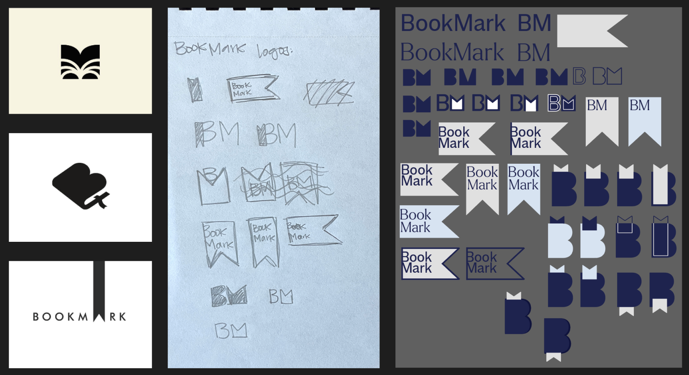
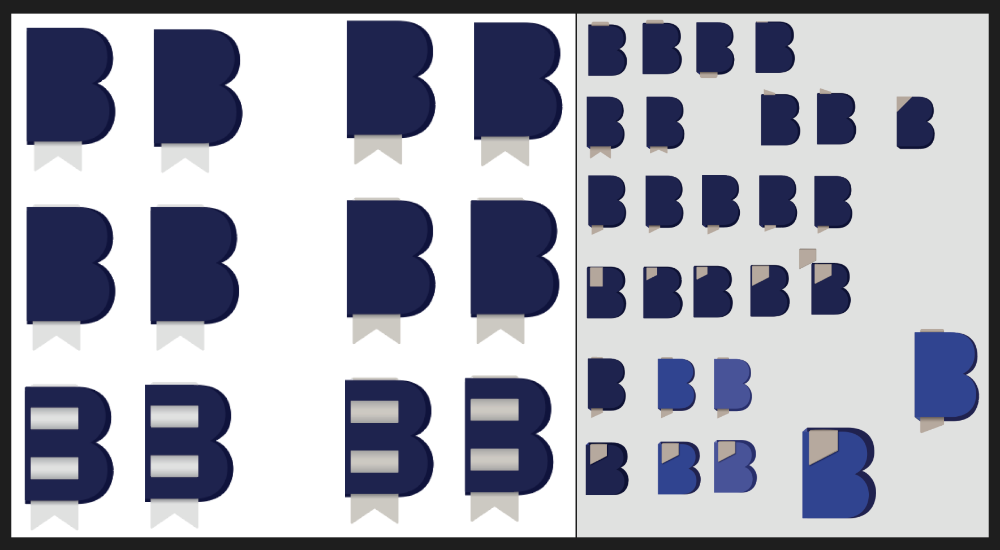
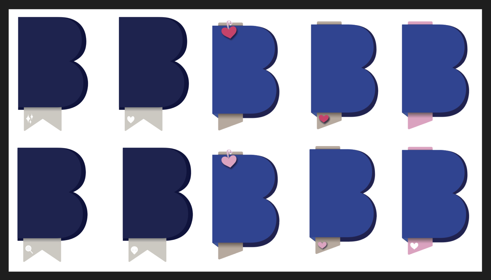
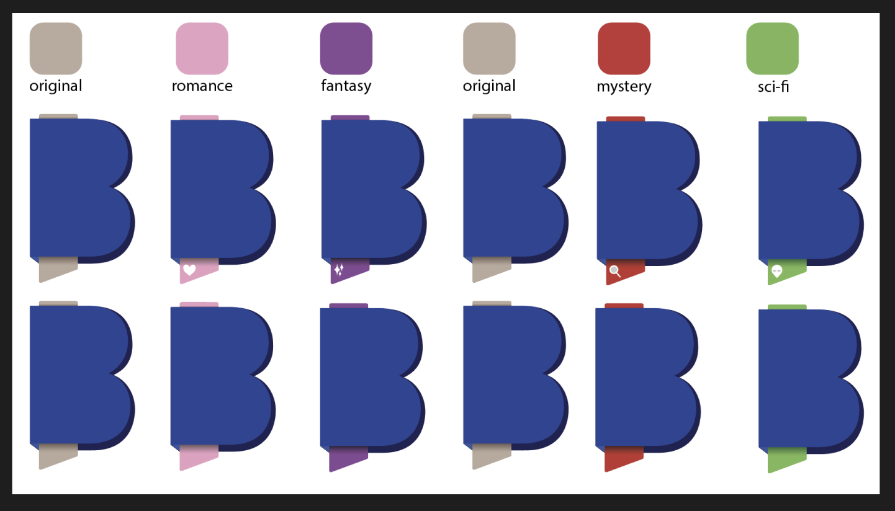
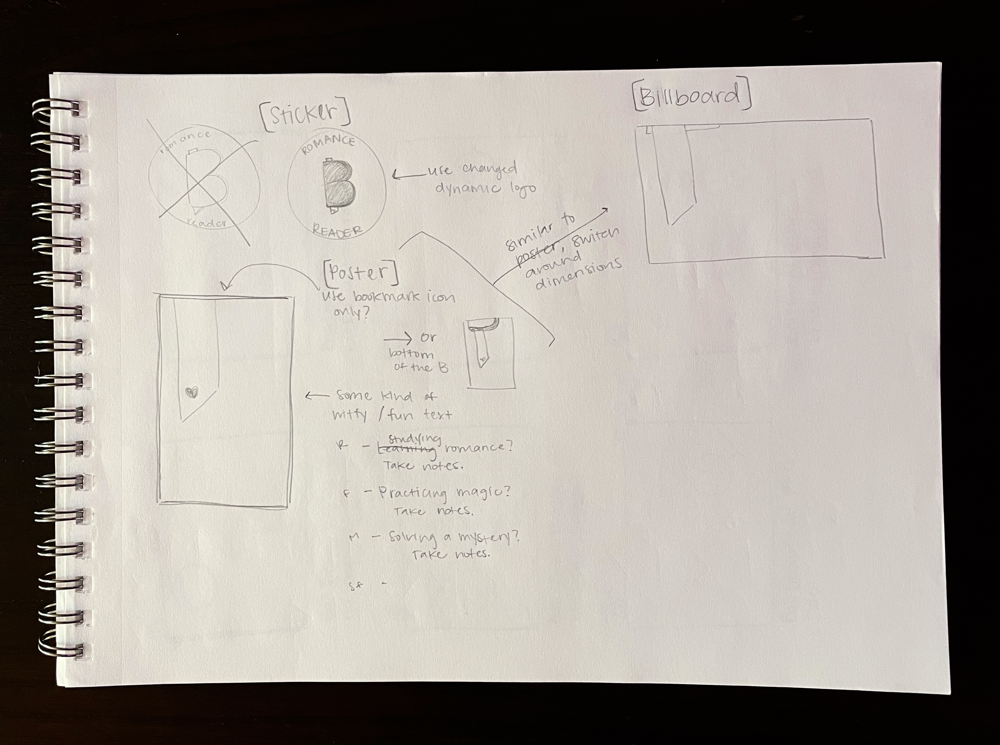
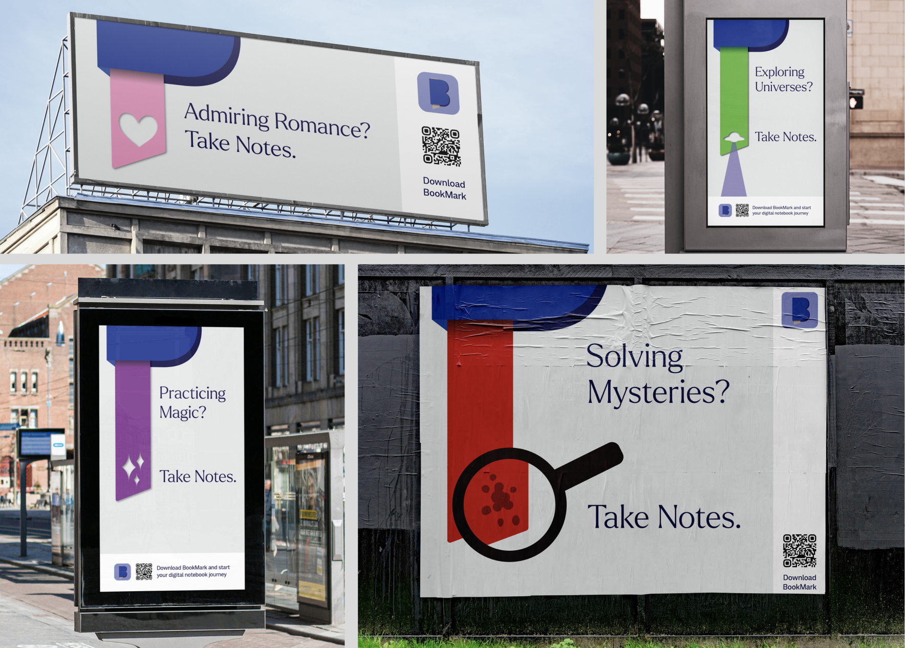

BookMark is a project that examines the lack of digital
note-taking methods that allow for an organized, customizable, and intuitive experience, and explores how to remedy that lack through research, design and community.
Where BookMark Began
Let me take you back in time for a minute. It's September of 2023 and I have just begun reading A Court of Thorns and Roses, the first in a five book series by Sarah J. Maas. Little did I know she has written two other series, Throne of Glass and Crescent City, which I promptly picked up and read as soon as I could. Fast forward four months and I'm now starting my Spring 2024 courses along with what feels like an incurable book hangover after finishing all 16 books in the Sarah J. Maas universe.
With my UX Design course in full swing, we are all tasked with brainstorming ideas and creating a project that incorporates using UX research and design. At this point in time, books are still the only thing on my mind so I considered how I might use that to my advantage for this project. I could not stop thinking about reading, so how I could I make reading my homework? Well, a re-read of course. Now picture me sitting at my desk with a lightbulb illuminating above my head – a book app! More specifically, a note-taking app, because for said re-read I want to take notes but I do not want to mark up my physical books.
So there poses my problem: How can I keep my books looking like the image above, even after taking notes?
This problem is two-fold, not only was I looking for a way to take notes outside of the pages, I also knew it would be important that those notes were available for easy future reference. And so, the first stages of BookMark research and prototyping began. I started out by turning my problem statement into a question as follows:
How can I efficiently and digitally take notes with the intention of easy reference in the future?
Research
Before I could dig into the best part (designing), I had to do some research. Who would use a book note-taking app? Why would people use it? How would they want to use it? Do people other than myself even take notes when they read? I had an endless stream of questions, so I conducted interviews with a handful people who I would consider potential users. From this small sample group, I was able to articulate what type of person does take notes and better understand how a note-taking flow would appeal to them. I also conducted market research to see what exists already that potentially solves this problem.
The color schemes created and shared for feedback before starting the BookMark brand.The very first draft of BookMark's prototype taking shape.The final prototype draft of BookMark for UX Design Spring 2024.
As I continued through spring semester, I frequently brought the prototype to peers and users for feedback. Getting different perspectives on the user flow, thoughts about functionality that was missing (or overkill), and playing with new ideas to add, was integral to bringing BookMark to a place where it could be ready if I decided to make it my Capstone project. Below you can see the hero image of BookMark's app for my final presentation in May.
Rebranding
During the summer semester, I decided I wanted to move forward with BookMark as my Capstone project. With this in mind, I leveraged an assignment in my Experimental Interaction class to give BookMark some well deserved branding updates. The assignment was to create a dynamic brand identity, and in order to do that with BookMark, it needed a brand. There were fonts and colors picked out, sure, but there wasn't a strong identity for BookMark yet, so I began there.

This image shows the original inspiration for the logo, along with hand drawn sketches and digital sketches.

After refining ideas, these are the next set of digital sketches for BookMark's logo.
After deciding on the final logo (can you spot it?), I began figuring out how I could make it dynamic. This led me to the idea of creating a marketing campaign that targeted users based on their favorite genres to read. My earlier research showed that people generally only read a few genres at most, and their note-taking habits tend to differ depending which genre they are reading – for example, I had a user tell me they take notes on spiritual and/or self-improvment books, but when they read fiction genres like mystery, they don't. Below are digital sketches of merging the logo with different genres.

First ideas to tie the logo to different genres.

Connecting colors to each genre and creating icons for the bookmark.

Sketches for BookMark's marketing campaign, "Take Notes."
After having set the genre colors and icons, I took to hand sketching my thoughts for the marketing campaign, coming up with the tagline "Take Notes." I played around with the few different versions I had sketched, and landed on images below as the final mockups for BookMark's first marketing campaign.

Strengthening the Foundation
Now I'm entering Fall semester, which means the Capstone course is in full swing, and it's time to take a look at BookMark: what do I have so far, and what do I need? One thing we know for sure is that the prototype from Spring semester needs to reflect the branding updates we just walked through. But more importantly, what's next for BookMark? After having some insightful conversations with users, and my professor and peers in the Capstone course, it became evident what was next for BookMark – an expansion beyond just taking notes, but hosting a community space for like-minded readers and note-takers to connect and share. The first step for this new direction is to adjust the problem statement:
How can readers efficiently and digitally take notes, share them, organize them, customize them and have quick and easy access for future reference?
What follows now is many, many iterations. Through updating the branding, building out the new community space, and rebuilding the existing pages, BookMark saw many different versions of itself. Below is an updated flow for note-taking, which is linked to a FigJam file that also has the onboarding flow created for BookMark users.
Below you can see BookMark's original journey to the user's homepage compared to the current version. The first journey we see is brief and simple, but doesn't showcase any branding updates or the addition of an onboarding flow. The current journey includes that new onboarding flow, the branding updates and a recreated layout for the homepage that includes easier navigation through a bottom nav and shortcuts to the community posts and book groups.
Another major redesign was made to the note-taking interface. As the images show below, there were drastic changes to the layout as well as the contents of what the user is able to do when taking notes. The original layout was a drop down menu that allowed for marking a page, titling the note, adding the contents of the note and/or adding tags to help with easy future note searching. The newest version, as we'll see in a demo just below here, adds the ability to leave an audio note, share the note to book groups, and gives the user the ability to make the note public or private. It also takes away the ability to title a note, informed by users saying they likely wouldn't use the feature.